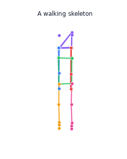
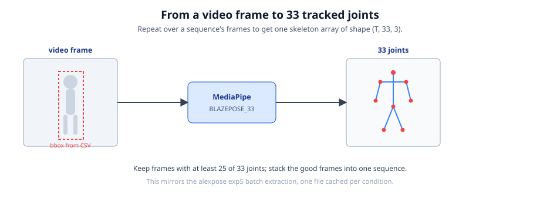
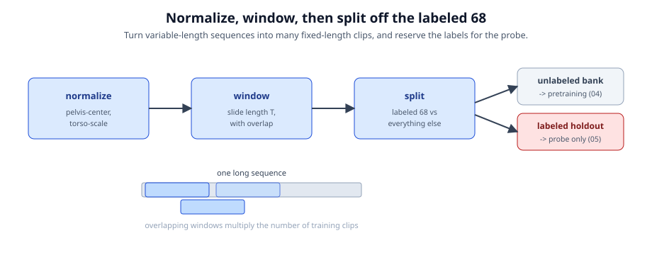

Gait-JEPA iteration 2, teaching walkthrough
From a folder of videos to a gait encoder
Six notebooks, no machine-learning background needed. Every notebook runs on a laptop CPU in seconds in its default smoke mode.

The map
The six-notebook flow

Scan, download, extract, build the corpus, pretrain, probe. Each notebook writes a small cache file the next one reads.
Notebook 00
0Scan every sequence, lock the labelled 68
- Walk every condition folder, reduce each sequence CSV to one manifest row.
- Mark the labelled subset as the exact 68 the prior Random Forest used, by sequence id.
- Write the manifest, the 68-row labelled manifest, and exp5's exact split.

Notebook 01
1Download the unique videos once

- Many sequences share a video, so we dedup by video id and download each once.
- The 68-subset videos are fetched first, and every file is validated with ffprobe.
- Resumable: already-cached videos are skipped.
Notebook 02
2Extract skeletons with MediaPipe
- Run MediaPipe BlazePose over every downloaded sequence: 33 joints per frame.
- Coordinates normalized to [0,1], whole frame, matching the prior study's contract.
- Report coverage of the 68 with a reason for any that fail.

Notebook 03
3Build the unlabelled corpus

- Normalize each sequence (pelvis-center, torso-scale) and slice into overlapping windows.
- Hold out the 68 labelled sequences for the probe only.
- Exclude any window whose source video also backs a held-out labelled sequence.
Notebook 04
4Pretrain the JEPA, watch for collapse
- Wire the four pieces: context encoder, EMA target, predictor, VICReg loss.
- Train with block masking on the unlabelled corpus, no labels at all.
- Watch the loss fall and the embedding spread stay healthy (no collapse).

Notebook 05
5Freeze the encoder, spend the labels

- Freeze the encoder, embed each labelled clip, mean-pool to one vector per sequence.
- Train a small probe and compare to the 0.76 Random Forest, honestly, per sequence.
- Trace the label-efficiency curve and check the encoder learned clinical axes.
The honest result
Per sequence, 0.49 to 0.63 versus 0.76

Per-sequence probe 0.49 (linear) to 0.63 (MLP), well above chance (0.20), below the tuned Random Forest (0.76), on the same 68.
Try it
Runs anywhere, in seconds
Every notebook has a SMOKE_TEST switch. Set it to True for synthetic data, no network, no pose model, top-to-bottom on any laptop CPU; the committed notebooks ship at False (the real run behind these numbers) and read a .env pointing at your data.
Open any notebook's Colab badge, or run locally with uv. Iteration 1 is preserved in gavd/ as a checkpoint. For the plain-language story of the whole journey, see docs/learning/learning-journey.md.